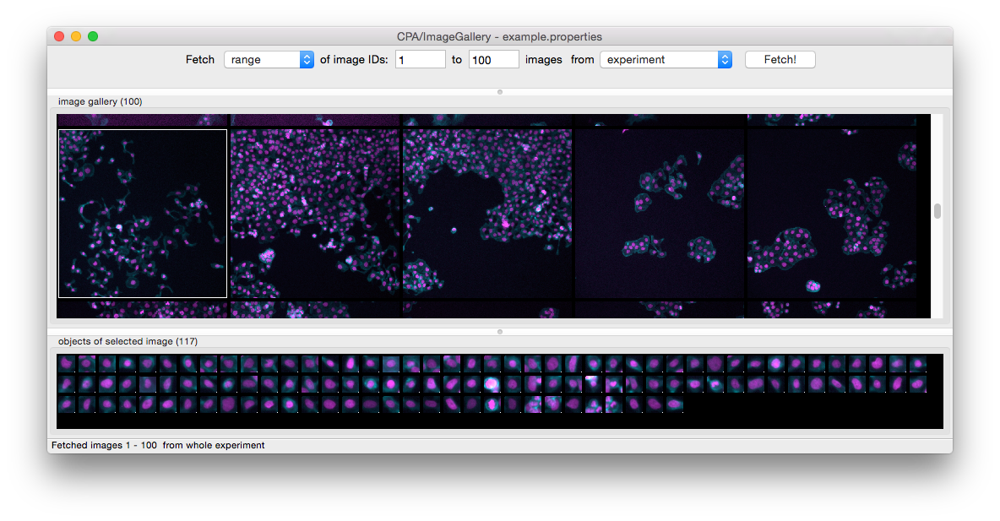

XIV. Image Gallery¶

Image Gallery
Set the displayed image size in your properties file with image_size = 200.
Right click on any image in image gallery
and select 'fetch all objects' to fetch all
cells for this image. Fetched images will be
displayed in the lower toolbar.
The size of the fetched objects will be the set
size of image_tile_size inside the properties
file.